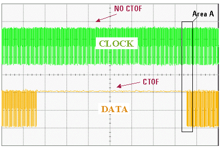

Preventing Reload of Primary Sets for Clock Port
The following figure shows the signals of the clock and the data pin if they are allocated to separate ports.
This allows you to change the primary set in one (DATA) port without interrupting the signal in the other (CLOCK) port.
Only the primary sets for the pins in the data port have been re-loaded. For this port, the timing sets are re-loaded and the edges have to be re-programmed. This is associated with a CTOF sequence and a static state of the driver.
No CTOF sequence is executed for the clock port. The clock is not interrupted.
For a continuous clock setup:
- The clock pin has be in a separate port (clock port).
- The clock port has to be in its own sequencing group.

See the section Phase Synchronization for an explanation of the "Area A" in the figure above.
Functional changes
- Introduced before SmarTest 6.3.2